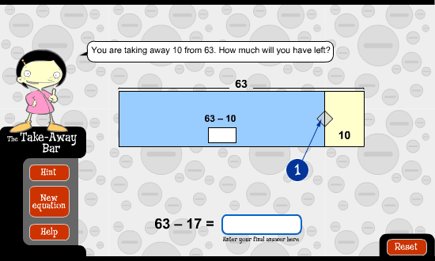
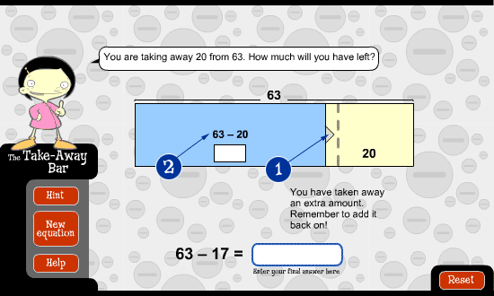
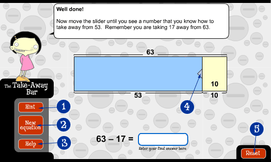

Some numbers seem too big to take away easily. It can be useful to break the numbers into smaller numbers that you already know how to take away. This is what The Take-Away Bar helps you to do.

- This slider moves from right to left to break up the number you are taking away.

- The slider also allows you to make the number you are taking away bigger. To do this, move the slider to the left past the line. In this example, the slider has been moved to the left to increase 17 to 20.
Remember! If you take away an extra amount you will need to add this back on to arrive at your final answer.
- This shows the subtraction made by moving the slider from right to left.
You can solve this subtraction or keep moving the slider to make the answer easier to work out.

- Select Hint to see some strategies that may help you to work out the answer.
- Select New equation to start at the beginning with different numbers.
- Select Help to see instructions on how to use The Take-Away Bar.
- The slider cannot be moved back to the right once you have broken up the number and provided a correct answer. However, you can slide it to the left to break up the number you are taking away into even smaller parts.
- Select Reset to work with the same numbers in a different way using The Take-Away Bar. Only choose it if you want to start again.